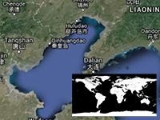

Detect the location on the water or on the land by additional texture.
Usage instructions:
Link to additional Texture
Add this script to map GameObject.
Select additional texture.
Important: Make sure «Read / Write Enabled - ON» in Texture Importer.
Move your mouse over the map and click «P».
Link to additional Texture
{kind=link}
Add this script to map GameObject.
Select additional texture.
Important: Make sure «Read / Write Enabled - ON» in Texture Importer.
Move your mouse over the map and click «P».
DetectWaterByTextureExample.cs
/* INFINITY CODE 2013-2016 */
/* http://www.infinity-code.com */
using UnityEngine;
namespace InfinityCode.OnlineMapsExamples
{
[AddComponentMenu("Infinity Code/Online Maps/Examples (API Usage)/DetectWaterByTextureExample")]
public class DetectWaterByTextureExample : MonoBehaviour
{
private static Color32 waterColor = Color.black;
// Set map 2048x2048, with Read / Write Enabled
public Texture2D mapForDetectWater;
private void Update()
{
if (Input.GetKeyUp(KeyCode.P))
{
Vector2 mouseCoords = OnlineMapsControlBase.instance.GetCoords();
bool hasWater = HasWater(mouseCoords.y, mouseCoords.x);
if (hasWater) Debug.Log("Has Water");
else Debug.Log("No Water");
}
}
private bool HasWater(float lat, float lng)
{
// Convert geo coordinates to tile coordinates
Vector2 tilef = OnlineMapsUtils.LatLongToTilef(lng, lat, 3);
const int countTileRowCol = 8;
// Convert tile coordinates to texture coordinates (UV)
tilef.x /= countTileRowCol;
tilef.y /= countTileRowCol;
// Check pixel color
Color color = mapForDetectWater.GetPixelBilinear(tilef.x, 1 - tilef.y);
Debug.Log(tilef);
/*Debug.Log ("pixel color = " + color);
Debug.Log ("water color = " + waterColor);*/
return color == waterColor;
}
}
}